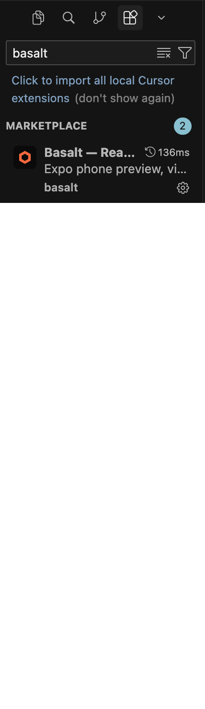
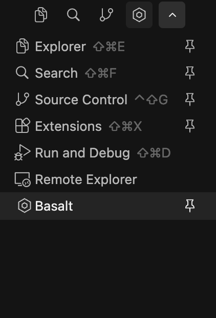
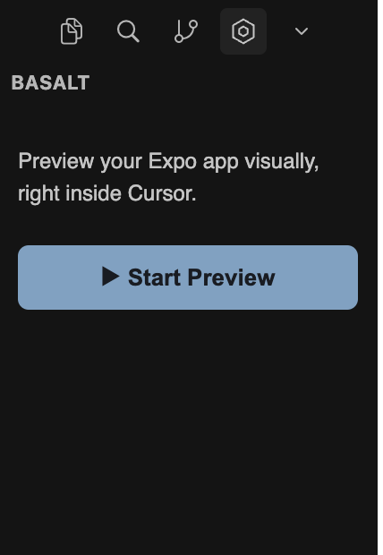
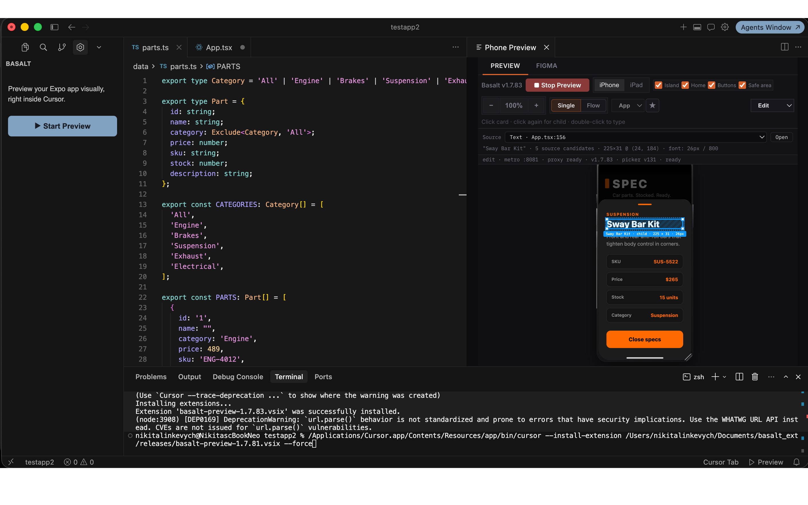
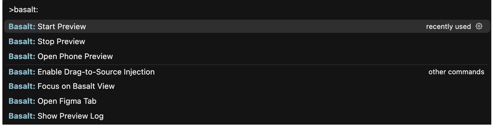
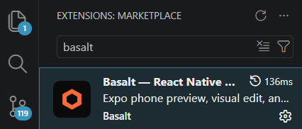
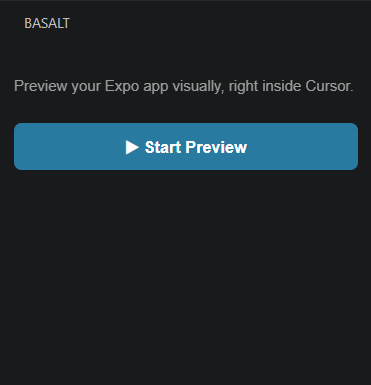
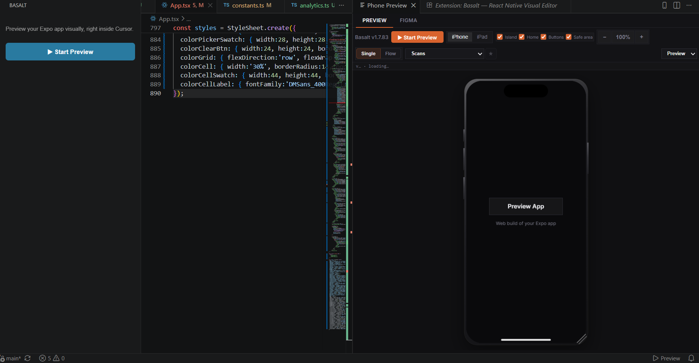
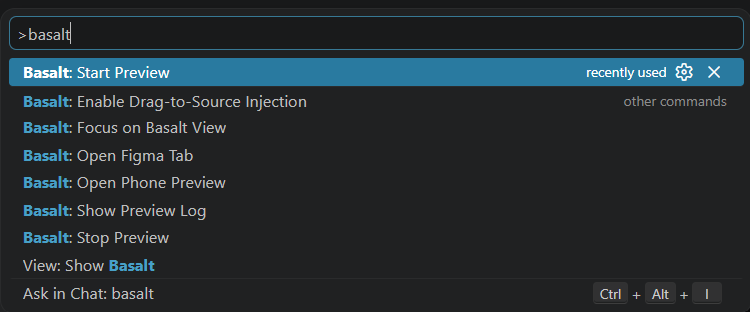

User guide
Four steps from installing the extension to editing your app's UI live, right inside your editor.
Open the Extensions panel in Cursor, search Basalt, and click Install.

Click the Basalt icon in the Activity Bar on the left edge of your editor, then click Start Preview.

Basalt boots your Expo app and renders it live, right next to your code. Switch between iPhone and iPad, and pick between Edit, Inspect and Preview modes from the dropdown.

In Edit mode, click text, cards, or images directly in the preview to change them. Basalt writes the change straight back into your source file — no separate design tool, no copy to keep in sync.

Press cmd + Shift + P (Mac) or Ctrl + Shift + P (Windows/Linux) and type Basalt to see every command — Start Preview, Stop Preview, Open Phone Preview, and more — without touching the sidebar.

Open the Extensions panel in VS Code, search Basalt, and click Install.

Click the Basalt icon in the Activity Bar on the left edge of your editor, then click Start Preview.

Basalt boots your Expo app and renders it live, right next to your code — same phone preview, same Edit and Inspect modes, right inside VS Code.

Press ⌘⇧P (Mac) or Ctrl⇧P (Windows/Linux) and type Basalt to see every command — Start Preview, Stop Preview, Open Phone Preview, and more — without touching the sidebar.
